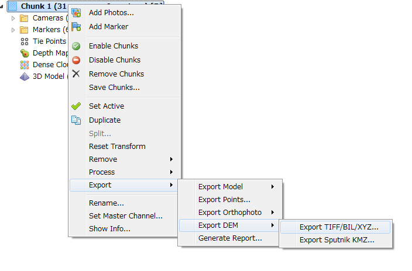

PhotoScanの基礎
1. 画像の取り込み
Addphotosをクリック

使用する画像を選択、open
2. Align Photos
Workflow→Align Photos
使用する画像を選択、open
 Accuracy:Low
Pair preselection:Refrence (画像データに位置情報がついている場合、ない場合はGeneric)
クリックOK
Accuracy:Low
Pair preselection:Refrence (画像データに位置情報がついている場合、ない場合はGeneric)
クリックOK

3. GCP setting
GCP settingの前にメッシュモデルを作成する。メッシュモデルを作成することにより複数の画像に移っているGCPを一斉に選択することができる。
Workflow→Build Mesh
クリックOK

画像データよりGCPをsettingする。
ToolbarのReferenceを表示させる。（Toolbar上で左クリックRefrence選択）
Toolbar上のEdit Markersをクリック。

Refrenceより画像を選択して画像上のGCPを置いた点で 右クリック→Create Markerクリック。

Markersが作られているかRefrenceで確認。 わかりやすい名前にMarkersを変更。

ReferenceよりImportをクリック。 位置情報のテキストファイルをImport。（ダブルクリックで直接入力もできる、、、。こちらでテキストファイルを用意する場合、Importのほうがミスはないかも？）

各Markerが正しい点におかれているか確認する。 左クリック→Filter Photos by Markers Photosのタブで確認、ずれている場合はドラッグして修正。

Settingをクリック。座標系を確認。 今回は日本測地系第９系(JGD2000/Japan Plane Rectangular CS Ⅸ)

RefrenceのタブでCamerasのチェックをすべて外す。Camerasの位置情報を使わない状態にする。
Optimize Camerasをクリック。 クリックＯＫ。

4.Build dense cloud
Workflow→Build Dense Cloud

Quality:Low クリックOK
5. Build mesh
Workflow→Build Mesh

Surface type:Height field Source data:Dense cloud でクリックOK。

6. export to DEM, orthophoto,LAS
orthophotoの精度をあげるためBuild textureを行います。 Workflow→Build Texture

クリックOK。

Chunk 1で右クリックExport→Export Orthophoto→Export JPEG/TIFF/PNGをクリック

座標系等を確認しクリックOK。

名前を設定し、TIFFで保存。 Chunk 1→Export→Export DEM→Export TIFF/BIL/XYZをクリック。

座標系等を確認、Crop invaild DEMにチェックを入れる。 クリックOK。

Geo TIFF Elevation Dataで保存、名前を設定して保存。
Chunk1→Export→Export Points

ファイル名を指定、ファイルの種類をASPRS LAS(.las)で保存。

座標系を指定、Point colorsにチェックを入れる。 クリックOK。